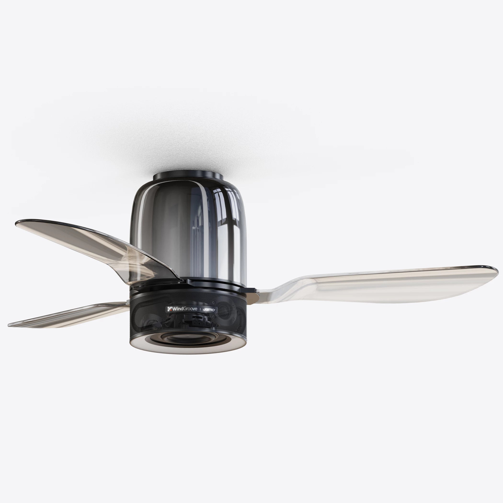

TL;DR
- A ceiling fan speaker combines air circulation and music playback. Three-in-one fixtures add lighting.
- A phone can send music to the speaker. The fan and light may use a remote or a separate app.
- The format suits shared music in a room where the ceiling position also works for a fan and light.
- Blade clearance, independent controls and the type of audio connection are the first features to establish.
A ceiling fan speaker is a ceiling fan with a built-in sound system. In a living room or dining area, it puts music above the shared space. Our AirFi One also provides the main light, bringing airflow, lighting and music into one fixture.
How it differs from other ceiling audio products
A speaker light has lighting and audio but no fan. Passive ceiling speakers use wires from an amplifier, as shown in this in-ceiling speaker guide.
A bathroom exhaust fan removes air through a duct. A ceiling fan circulates air within the room.

The music connection and the controls do different jobs
With Bluetooth playback, a phone sends audio to the ceiling speaker. The music app on the phone selects the tracks. The fixture’s remote or control app sets functions such as fan speed and lighting.
On AirFi One, music plays over Bluetooth. Wi-Fi connects the device to the WindGroove app for setup, settings and controls. Its fan, main light, RGB ring and speaker have separate controls. Music can play with the main light off and the fan at the speed you choose.
The built-in speaker is an audio system of its own
AirFi One’s audio system was developed with Jamo. Its 5.25-inch woofer handles bass, while two 1.5-inch mid-high drivers cover voices and higher frequencies. EQ settings let you adjust the tonal balance.
What changes when music comes from overhead?
The speaker’s position is fixed during installation. Above a dining table, it puts music near the gathering; in a long room, an off-center fan may sit well away from the main seats.
A stereo pair gives left and right speakers their own positions around a seat. The integrated-versus-separate guide compares those layouts and the equipment each requires.
The specifications that define a suitable model
| Feature | What it establishes |
|---|---|
| Blade span and mounting height | Whether the fan fits the ceiling point and surrounding space. |
| Airflow and speed settings | The air movement available for the room’s usual activities. |
| Main light and dimming | The fixture’s contribution to everyday and evening lighting; RGB effects are an additional feature. |
| Audio connection and speaker design | How music reaches the fixture and which hardware reproduces it. |
| Independent controls | Which combinations of light, fan and music can be used. |
For prices and specific models, continue to the buying guide.
A fixed ceiling fixture needs fan-rated support
For AirFi One, we recommend a licensed electrician and a fan-rated box. Use the mounting guide to measure the space around the ceiling point.
Where the format fits—and where to look elsewhere
| Room or use | Direction | Important condition |
|---|---|---|
| Living or dining area needing airflow, light and shared music | A three-in-one fixture fits the task. | The ceiling point must serve the activity area and meet the model’s clearances. |
| Low ceiling or nearby tall furniture | Start with the mounting measurements. | A flush mount still needs blade clearance. |
| Focused stereo listening or TV sound | Plan speakers around the seat or screen. | Placement and audio connections determine the system. |
| Linked music across rooms | Choose an audio platform with grouping support. | AirFi One’s Wi-Fi connection controls the device; its music connection is Bluetooth. |
| Bathroom extraction or outdoor use | Choose a product rated for the specific task and location. | Room circulation does not provide exhaust ventilation. |
Category questions
Does “music sync” mean there is a built-in speaker?
It can describe lighting that reacts to sound. A music-playing fixture should also specify a speaker and an audio input such as Bluetooth.
Does a ceiling fan speaker need speaker cable?
A Bluetooth model such as AirFi One receives music wirelessly and uses the fixture’s electrical supply. Passive ceiling speakers use cable from an amplifier.
Can I add a speaker to any existing ceiling fan?
Only use an accessory approved for the exact fan. AirFi One is supplied as a complete fan-light-speaker fixture; a separate room speaker is another option when keeping an existing fan.